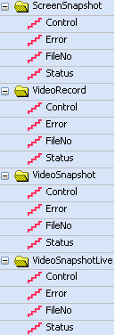
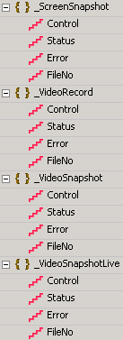
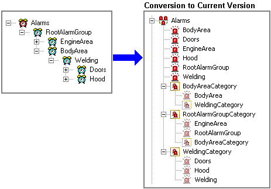

|
|
|
|
|
|
|
|
This section describes how project data is converted when Vijeo Designer is upgraded to new versions, as follows:
In Version 6.2 SP4.1 of Vijeo Designer, enable the M580 Redundant CPU Variables feature to get Hot Standby information from a PLC (M580). If you open a project created in a previous version of Vijeo Designer with the current version, HSBY_INFO is disabled by default. When M580 Redundant CPU Variables is enabled, you cannot open the project in previous versions of Vijeo Designer.
In Version 6.2, you can install Vijeo Designer independently. As a result, note that the default project location of Vijeo Designer V6.1 SP4 is different from the default location of Vijeo Designer 6.2. The Vijeo Designer/Vijeo Manager path has changed from C:\Documents and Settings\All Users\Vijeo-Designer\Vijeo-Manager to C:\Documents and Settings\All Users\Vijeo-Designer 6.2\Vijeo-Manager.
From Version 6.1 SP2.1 onwards, you can no longer define two users of the same name, where one name is in lowercase and the other name in uppercase. However, if you import a project that was created in a version previous to Version 6.1 SP2.1, you can use the two users of the same name, different case letters, but you cannot create any new ones.
In previous versions of Vijeo Designer, the dynamic content of an alarm message updated on every alarm state. In Version 6.1, the default setting for this feature is updating on active states only. For more information, see section 16.3.8, Setting Up Dynamic Messages in Alarms.
Due to limited memory in the main drive, when downloading projects, the Include Editor Project property in the Target properties is now disabled if Data Files/Forms in Data Locations is set to Main Drive. In many instances, the limited memory caused the project download to fail and required some targets to recover run time.
In Version 5.1 of Vijeo Designer, the data location for the playback video file has changed. For the updated data location, see Appendix 5.11.3, Supported Data for each Drive. When upgrading from Version 5.0 to Version 5.1, you will need to change the playback video file location accordingly.
The Vijeo Designer/Vijeo Manager path has changed from the My Documents folder to:
C:\Documents and Settings\All Users\Vijeo-Designer\Vijeo-Manager
TSX Series 7 Equipment has been renamed to Uni-Telway TSX Series 7 Equipment.
You can now edit the Free Format Print Table field in the Dialog Table Settings window. This field is enabled only if you added Free Format Print Table in the Dialog Table Functions window.
Windows 2000 and its tools are no longer supported in Vijeo Designer.
In previous versions of Vijeo Designer, folders that are used to organize variables into groups could not be nested within other folders. In Version 5.0.2, folders can now be nested within other folders. A folder can have a maximum of five nested folder levels.
In previous versions of Vijeo Designer, the underscore (_) delimiter was used in Variable import and export and Recipe import and export. Vijeo-Designer V5.0.0 no longer supports the underscore character as a field delimiter when exporting or importing csv files.
If you have used the underscore delimiter option and want to import, you can open the exported text file, search for the underscore character, and replace it with one of the supported delimiter characters.
This table describes how Frame Lengths for the following device drivers will be converted in Version 5.0.0 when working with some Schneider PLC communication modules:
Vijeo Designer Project Version |
Device Driver |
Conversion |
Version 5.0.0 |
FIPWAY, FIPIO, Uni-Telway, Modbus TCP/IP, Modbus Plus USB, XWAY TCP/IP, JBus (RTU) |
The Frame Length default will be 120 bytes. |
Version 4.6.0 and earlier |
FIPWAY, Uni-Telway, XWAY TCP/IP |
Drivers with 128 byte Frame Length will be converted to 120 bytes. |
Version 4.6.0 and earlier |
Modbus (RTU), Modbus TCP/IP |
The Frame Length will not change. |
In previous versions of Vijeo Designer, structures were used as folders to organize variables into groups. In Version 5.0.0, these old structures are now called "folders". The term "structure" is now used to describe a user data type with properties similar to those of other data types.
The following table describes the differences between a "folder" and a "structure" in Version 5.0.0:
Folder |
Structure |
Variables can freely move in and out of a folder. |
Variable elements in a structure can only be created and deleted from the User Data Types editor. The elements are ordered within the structure, and their order can only be changed from the User Data Types editor. |
Folders only have name and description properties. |
Structures have the same properties as other variables, such as scan group, data sharing, and so on. |
Folders cannot be nested within other folders, and you cannot create arrays of folders. |
Structures can be added as elements in other structures as well as other user data types, such as arrays, to create nested structures and arrays of structures. |
Folders have no bearing on the properties of variables they contain. Variables inside a folder behave the same as similarly configured variables outside the folder. |
Some properties of elements in a structure, such as address and scan group, depend on the properties of the structure. Therefore, structure elements behave differently from stand alone variables. |
New Integer data types have been added to Version 5.0.0. Integer variables from previous versions will be converted to the new Integer types, depending on their data properties, as follows:
Source |
Data Format - Signed - Data Length |
Converted To |
Internal |
Default |
DINT |
External |
BIN - 2's Complement - 16 bits |
INT |
External |
BIN - 2's Complement - 32 bits |
DINT |
External |
BIN - 2's Complement - Bit Field |
Integer |
External |
BIN - Unsigned - 16 bits |
UINT |
External |
BIN - Unsigned - 32 bits |
UDINT |
External |
BIN - Unsigned - Bit Field |
Integer |
External |
BIN - MSB - Any |
Integer |
External |
BCD - Any - Any |
Integer |
In addition, new Block Integer data types have been added to version 5.0.0. Block Integer variables from previous versions will be converted to new Block Integer types as follows:
Source |
Data Format - Signed - Data Length |
Converted To |
External |
BIN - 2's Complement - 16 bits |
Block INT |
External |
BIN - 2's Complement - 32 bits |
Block DINT |
External |
BIN - Unsigned - 16 bits |
Block UINT |
External |
BIN - Unsigned - 32 bits |
Block DINT |
External |
BIN - MSB - Any |
Block Integer |
External |
BCD - Any - Any |
Block Integer |
In Version 5.0.0, the following data types have been renamed as indicated:
Previous Vijeo Designer Version |
Version 5.0.0 |
Discrete |
BOOL |
Float |
REAL |
String |
STRING |
Block Float |
Block REAL |
In Version 5.0.0, multimedia control variables have been renamed to have an underscore character added to the beginning of their names.
Previous Vijeo Designer Version |
Version 5.0.0 |
 |
 |
When you upgrade a project that contains Historical Trend Graphs and Plot Trend Graphs to version 4.6.0, the NumOfSamples, ValueMin, and ValueMax properties have changed and are converted to version 4.6.0 as follows:
Historical Trend Graph |
|
Previous Vijeo Designer Version |
4.6.0 |
NumOfSamples |
TimeAxisRange |
NumOfSamples |
|
Value |
|
ValueMin |
ValueMin |
Value |
|
ValueMax |
ValueMax |
Value |
|
Plot Trend Graph |
|
Previous Vijeo Designer Version |
4.6.0 |
NumOfSamples |
NumOfSamples |
Value |
|
ValueMin |
ValueMin |
Value |
|
ValueMax |
ValueMax |
Value |
|
In previous versions of Vijeo Designer, variables were located in the Variable tab. Variables are now located in the Variable Editor, which is available from the Variables node. When you update a project from a previous version of Vijeo Designer, all the variables will be preserved, but will now be available from the Variable Editor.
When you upgrade a project from version 4.1.0 or earlier, anywhere that the clear method was used in a script is converted to the delete method. Clear only removes the message from the alarm summary. Delete actually removes the message altogether from the alarm database.
When you upgrade a project from version 4.1.0 or earlier, the options set in the target machine's ToConfiguration property will be converted as follows:
None property setting converts to None (i.e., no change).
Top Left Corner property setting converts to Top Left / 3 Corner.
When you upgrade a project to version 4.6, the Time Zone and Daylight Saving Time settings are automatically set to those of the editor PC.
In version 4.6, the DiagBuffer method, DiagBuffer.getDfbName returns the name of the instance of the Derived Function Block (DFB) instead of the DFB class or type name.
The Runtime Always On Top property has been removed. To access other applications, set the Disable Key Control to Disabled and then press [Alt]+[Tab]. For more information on the Windows Control property, see Section 4.5.1, Target Properties.
In version 4.5.0, Application Scripts have been changed to Actions. For Application Scripts in previous versions, this table details how the trigger types are converted:
This Application Script Trigger Type |
Is Converted to This Action Trigger Type |
On Startup |
Event Action |
On Shutdown |
Event Action |
Periodic |
Periodic Action |
Conditional - While True |
Periodic Action with Interlock |
Conditional - When True |
Conditional Action |
Conditional - On Data Change |
Conditional Action |
Conditional - While False |
Conditional Action |
Conditional - When False |
Periodic Action with Interlock |
When Touch Panel |
Event Action |
If you used Toolchest parts in previous versions of Vijeo-Designer and you open the user application in a current version of Vijeo-Designer, the functionality of the part does not change. If you want more instances of that object, you should drag and drop the part from the Toolchest in order to obtain updated parts.
If you drag the same Toolchest part into the project again from the Toolchest, and if the Toolchest part has been updated, then all instances of the part in the project are upgraded to the new object. The object may behave differently, so please check the object's operations in simulation and on the target machine to make sure it runs as expected.
The following Toolchest parts have been updated or are new in this version:
Browser
Security.
When you upgrade a project that uses an iPC with ESC/P or Text printing from version 4.4.0 to version 4.5.0, the printer type will be converted to Windows Default.
When you upgrade a project that uses PCL Command printing from version 4.4.0 to version 4.5.0, the printer type will be converted to HP PCL5.
Object size validation is based on font size. An object that is not high enough or not wide enough will be surrounded by a red rectangle and will generate a validation error.
Text (ASCII) and Epson ESC/P printer types are not supported anymore. After the conversion, the printer type will be changed to Windows Default.
When the Mark property is set to Enabled for a channel on a Plot Trend Graph, the displayed markers are now white. Previously, the markers matched the color of the channel making the markers difficult to see.
When you upgrade a project from version 4.3.0 or earlier to version 4.4.0, Vijeo-Designer scans all the variables in the old project to determine which variables are using data logging. Variables that used data collection settings are assigned to a data logging group that best matches those settings.
The table below shows how variable settings from version 4.3.0 are upgraded to version 4.4.0.
4.3.0 Variable Settings |
4.4.0 Variable Settings |
Keep History = Enabled |
New data logging group is created |
Number of Days |
Sampling
Type |
Logging Interval (sec) |
Units |
When you upgrade a project from version 4.3.0 to a current version, each 4.3.0 security user is upgraded to a version 4.4.0 security group. The new security group will have the same security settings that the old security user had.
The table below shows how the 4.3.0 security user settings are upgraded to the 4.4.0 security group settings.
4.3.0 Security User |
4.4.0 Security Group |
Download Enabled |
Download = Allowed |
Data Transfer = Read |
Data Manager = Read |
Data Transfer = Read/Write |
Data Manager = Read/Write |
Data Transfer = Read/Write/Delete |
Data Manager = Read/Write/Delete |
When you upgrade a project that uses a high-speed Siemens MPI driver from version 4.3.0 to version 4.4.0, a message displays to indicate that the transmission speed used in the older project is no longer available and that the speed will be adjusted. The highest transmission speed available for the Siemens MPI driver is now 187500 bps.
If you want to retain the transmission speed in your version 4.3.0 project, we recommend that you do not upgrade your project.
In the Equipment Configuration dialog box, the Double Word Word Order property now applies to both 32-bit Integer variables and 32-bit Float variables. After the conversion, the default setting in this property is High word first.
DAT files from VJD 4.3.0 and earlier can not be converted by Data Manager of VJD 4.4.0. This is because of the new naming convention: “DYYMMDDx.DAT” instead of “DYYMMDD.DAT” (x is the file number, in case there is more than one file per day: x starts at 0, then 1, and so on).
All data files are now in the same location. Data files set to different locations in the Download To property will all be set to Secondary Drive after conversion.
This option is no longer available. The user application can be on the Secondary Drive (CF card) but the Runtime system will always be on the Main Drive (internal flash).
The following printer types are no longer supported: PCL Command Printer, Epson 4 Colors Printer, and Epson 6 Colors Printer. If the printer was set to one of these types, the Printer property will be set to Enabled and converted to default settings after conversion.
Project simulation is limited to one hour.
The command to delete recipe files after retrieval is no longer available.
The Mark property for each channel resets to False after the conversion.
Color adjustments might be needed if the target color type is changed from one of the 2 existing target color types (“Monochrome” and “Reverse - Monochrome”) to one of the 2 new target color types (“8 Level Gray Scale” and “Reverse – 8 Level Gray Scale”).
Nested Alarm Groups are converted to alarm categories. The following illustrates version 4.1.0 or earlier nested alarm groups and its conversion to the current version.

Alarm groups remain as alarm groups. Nested alarm groups are converted to an alarm category with references to alarm groups and alarm categories.
The number of alarms displayed in alarm summary objects depends on the NumOfAlarm properties in the alarm group, even when nested inside an alarm category.
Without the alarm category, previous versions nested alarm groups and each alarm group defined the number of alarms it stored, which could include alarms from nested alarm groups. In the example above, RootAlarmGroup could be set up with NumOfAlarms = 50, and EngineArea NumOfAlarms = 20. If 30 alarms are active in the EngineArea alarm group, an alarm summary set to the RootAlarmGroup would display all 30 alarms, even though EngineArea NumOfAlarms was 20.
When this project is upgraded to the current version, the same alarm summary is now associated with the RootAlarmGroupCategory. In the same scenario, the alarm summary now displays 20 of the 30 active alarms from EngineArea, as defined by the NumOfAlarm properties.
Alarm Behavior is no longer defined in the Alarms node, but is now configured in each Alarm Group. When upgrading a project to the current version, the Alarm Behavior setting defined in the old project gets set for each alarm group in the new upgraded project. However, the Alarm Behavior for all diagnostic alarm groups always gets set to Mandatory ACK when upgrading.